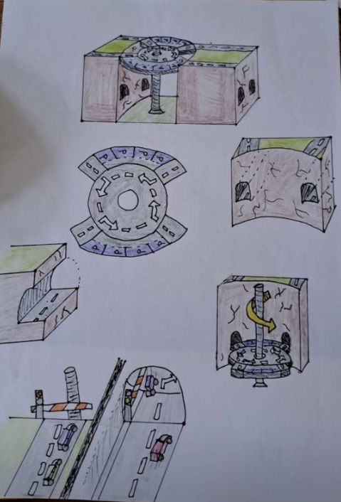
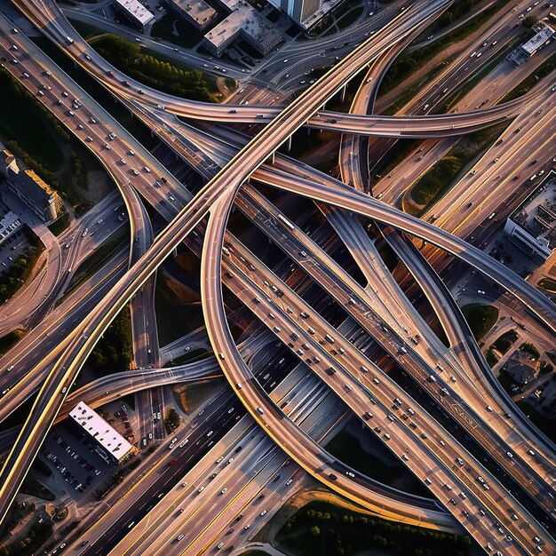
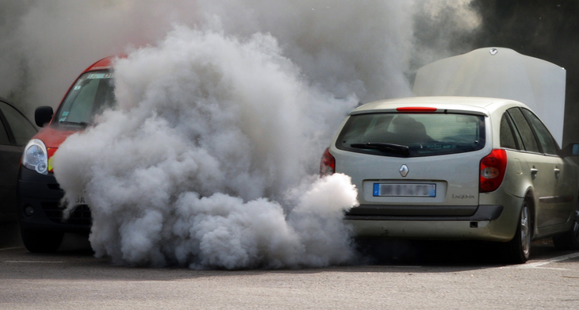
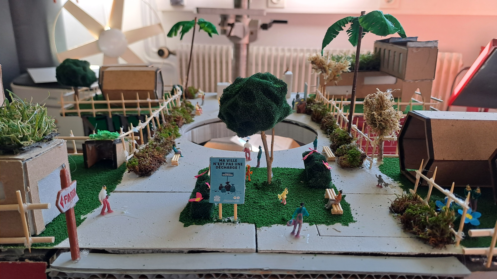

Notre première idée était de crée un pont rond point dans les but de fluidifier le trafique. Le pont était capable de montée et de descendre de façon à remplacer les nombreuses voix actuels.

Le problème était que nos objectifs pour le future était de réduire la production de gaz a effet de serre. Nous ne devions donc pas créer un pont pour les voitures et cela plus le fait que ce n’était pas très animé nous a fait opté pour un pont pour les piétons tels que notre nouveaux pont.
